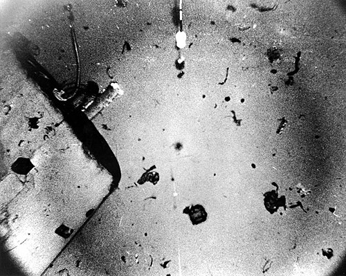

DOSSIER M11 // ATLANTIC // 1968
USS Scorpion: the submarine lost in the Atlantic
[ MARITIME & GEOGRAPHIC MYSTERIES // MODERN ]


Event and chronology
The U.S. nuclear submarine Scorpion failed to return to Norfolk in May 1968. The Navy searched and later located the wreck on the Atlantic seabed. A Navy Court of Inquiry reviewed available communications, maintenance information and deep-ocean photographs, but the loss mechanism remained uncertain.
What later accounts allege
Theories have attributed the sinking to a Soviet attack, a hidden nuclear exchange or deliberate Navy concealment. The classified nature of submarine operations is often treated as proof that any unresolved technical question indicates a cover-up.
Records, searches and conditions
The U.S. Navy inquiry and its published evidence examined the wreck’s location, acoustic records and possible mechanical failures. The court could not determine a single cause. Later analyses have considered a torpedo malfunction or battery/fire-related casualty, but no official finding proves a hostile attack.
Independent and contrary evidence
The wreck was located and photographed, giving investigators a physical record rather than a vanished vessel. The search’s location and acoustic evidence are inconsistent with an account that the submarine simply disappeared without scrutiny. Classified military context does not itself establish a foreign strike.
What remains unknown
The final chain of failures and the initiating event remain unknown. Deep-sea wreckage constrains analysis, while the loss of original sensor data and limits on public access to technical records prevent certainty. Competing engineering models remain interpretations rather than settled findings.
Assessment
The evidence confirms a catastrophic loss but does not establish sabotage or paranormal action. Authenticated sensor data, a newly declassified technical record or diagnostic wreck imagery distinguishing failure modes would change confidence; classification alone is not evidence of a cover-up.
Sources and limits
- Naval History and Heritage Command — USS Scorpion Court of InquiryOfficial 1968 case and inquiry file; public access and classification bound what can be assessed.
- U.S. Navy — Court of Inquiry into USS Scorpion lossPrimary inquiry analyzes operations and acoustic evidence but did not establish one definitive initiating failure.
- National Archives — USS Scorpion Navy recordsTargeted search in Navy operational records; records vary in availability and classification.